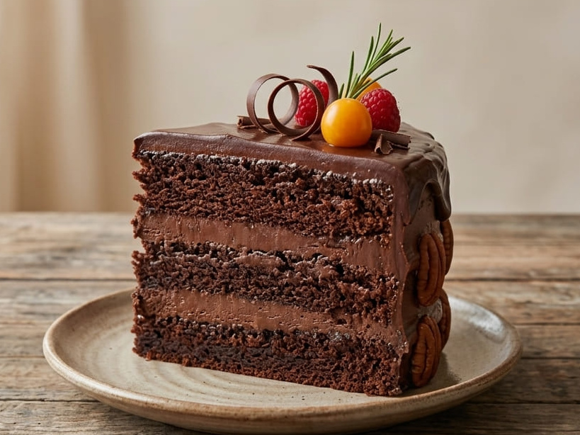
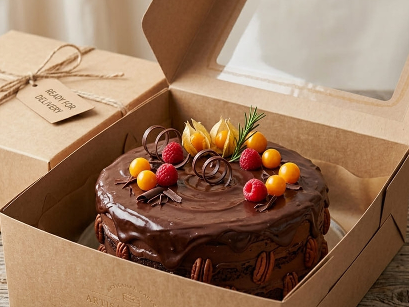
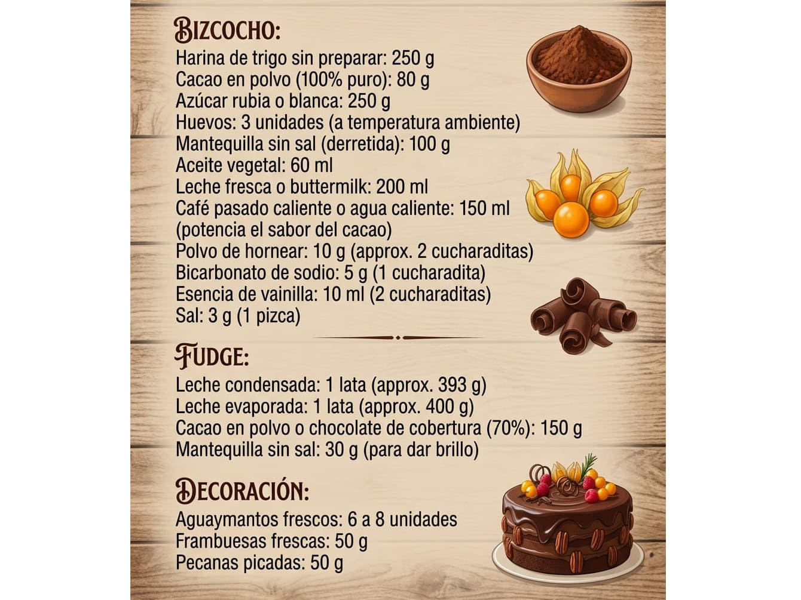

Torta de Chocolate Casera




Ficha del producto
| Stock disponible | 12 unidades |
|---|---|
| Horario de atención | 9:00 a 20:00 |
| Torre y departamento | Torre B, Dpto. 402 |
| Categoría | Postres |
| Métodos de pago aceptados | Efectivo contra entrega · Yape · Plin |
Para pedir necesitas una cuenta. Kercado no procesa pagos en línea ni realiza envíos; la entrega y el pago se coordinan directamente entre residentes